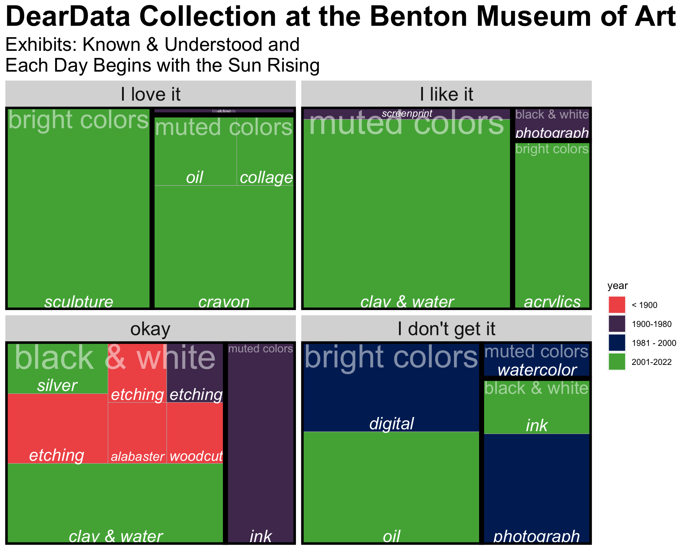

Dear Data - Solitude
Contribution to “In Here: Solitude”, a project to display part of the permanent collection of the Benton Art Museum at Pomona College.
Motivation
In Spring / Summer 2022, the Benton Museum of Art at Pomona College set out to create a unique way to display the permanent collection.
In Here: Solitude through the Benton Museum of Art at Pomona College is an interdisciplinary creative project, culminating in a book that showcases the imagination and talents of the Pomona College community. Structured as an encyclopedia/abecedarium, the collection consists of meditations on the concept of solitude, all based in the art collection of the College and written by students, faculty, administrators, and museum staff and interns. Fresh, synthetic, and provocative, In Here is a thoughtful reflection through art on the past few years and an exploration of an ancient topic recast in contemporary terms.
I was asked to participate by creating an entry which focuses on something that I do in solitude. I chose data collection / data analysis, i.e., data. The presentation of the collection and analysis is inspired by a project and book called
Process
I spent a few hours at the Benton collecting data on two of the current exhibits, Known & Understood and Each Day Begins with the Sun Rising. I collected many variables, but the ones recorded here and displayed below include:
| variable | type | description |
|---|---|---|
title-ish |
character | mostly the title, but sometimes a description if I didn’t remember to write down the title |
year |
numeric | mostly the year, but a midpoint if the year was a range or a guess if the year was approximate |
jo |
character | whether I loved it, liked it, thought it was okay, or didn’t get it |
nature |
character | either outside, a natural setting (e.g., a movie theater), or something abstract |
size |
numeric | 1 = about a 3rd of a museum wall; I scaled the piece size on a range from 0.2 to 5 |
people |
character | whether or not there were people represented in the piece |
medium |
character | the art medium, mostly taken from the description, but some that I made up |
color |
character | the colors in the object, either: black & white, muted colors, or bright colors |
Results
Each rectangle represents a single art piece; the size of the rectangle is based on the piece’s actual size relative to a museum wall. The artistic medium that was used on the piece is written in each rectangle; the year of the piece is given by color shade. The pieces are broken down into two additional categorizations: first they are blocked into the four categories of my reaction to each one; second, they are grouped (solid black lines) into pieces that share a coloring scheme. The data graphic uses a specific set of rules to draw rectangles which are proportional to the piece’s real life size while also arranging the pieces into creating color groups. You might notice that some of the categories are difficult to read, which is unfortunate, but true to the algorithm used to create the data visualization.
One might notice that I don’t really love older pieces.